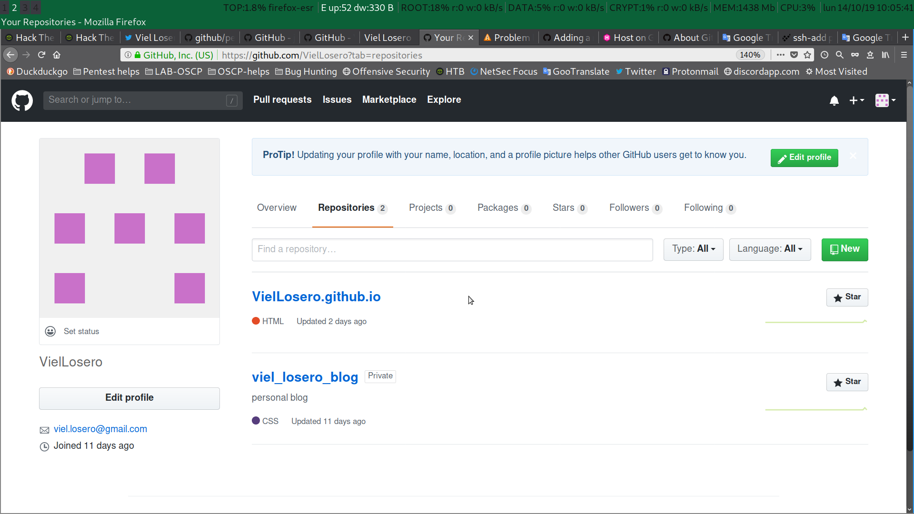

Hugo Static site generator: Hosting on github.
Table of contents
Github account
After my previous post where I start with Hugo the creation of a web page with static content, now it’s time to host that page in github.
I will not go into how to create an account on github, you can follow the instructions to create the account from this link. Hosting on github
Once the github account has been created, the ssh key has been added for remote management and the repository has been created, we will create the submodule.
Git submodule creation
Hugo creates the static site with the configuration files of the theme, content, static, etc. but these are not the real site, they are only for work on the fly. The public folder is the one containing the final static site created by hugo, Creating a submodule for the public folder will allow us to publish or update the web page without having to update all the configuration and site creation files.
root@kali:~/data/hugo/viel_losero_blog# git submodule add -b master git@github.com:VielLosero/VielLosero.github.io.git public
Clonando en '/root/data/hugo/viel_losero_blog/public'...
remote: Enumerating objects: 10, done.
remote: Counting objects: 100% (10/10), done.
remote: Compressing objects: 100% (9/9), done.
remote: Total 10 (delta 2), reused 0 (delta 0), pack-reused 0
Recibiendo objetos: 100% (10/10), 256.29 KiB | 749.00 KiB/s, listo.
Resolviendo deltas: 100% (2/2), listo.
root@kali:~/data/hugo/viel_losero_blog# We can check the current submodules with:
root@kali:~/data/hugo/viel_losero_blog# cat .gitmodules
[submodule "themes/terminal"]
path = themes/terminal
url = https://github.com/panr/hugo-theme-terminal.git
[submodule "themes/ananke"]
path = themes/ananke
url = https://github.com/budparr/gohugo-theme-ananke.git
[submodule "public"]
path = public
url = git@github.com:VielLosero/VielLosero.github.io.git
branch = master
root@kali:~/data/hugo/viel_losero_blog# Creating the site
With a simple hugo command, the program will create the static pages in public, remember to remove the draft from the header of the posts so that hugo creates the static pages. With the -t option we can indicate the theme we want if we have more than one theme installed.
root@kali:~/data/hugo/viel_losero_blog# hugo -t terminal
| EN
+------------------+----+
Pages | 6
Paginator pages | 0
Non-page files | 0
Static files | 15
Processed images | 0
Aliases | 3
Sitemaps | 1
Cleaned | 0
Total in 10 ms
root@kali:~/data/hugo/viel_losero_blog# Accepting changes
Once the final files of the site have been created in the public directory, we need to add those files to the repository and make a commit to accept the changes to take effect on the repository.
root@kali:~/data/hugo/viel_losero_blog# cd public/
root@kali:~/data/hugo/viel_losero_blog/public# git add .
root@kali:~/data/hugo/viel_losero_blog/public# git commit -m "create public folder and commit it"
[master 164fb0a] created public folder and commit it
25 files changed, 805 insertions(+), 18 deletions(-)
create mode 100644 assets/2bf08001f42c34e30e1de9d2eb81aead.woff
create mode 100644 assets/62da0ac51db1e4a3a4d57b9154a344fc.woff
create mode 100644 assets/blue.css
create mode 100644 assets/green.css
create mode 100644 assets/main.js
create mode 100644 assets/pink.css
create mode 100644 assets/prism.js
create mode 100644 assets/red.css
create mode 100644 assets/style.css
create mode 100644 categories/index.html
create mode 100644 categories/index.xml
create mode 100644 categories/page/1/index.html
create mode 100644 img/favicon/blue.png
create mode 100644 img/favicon/green.png
create mode 100644 img/favicon/orange.png
create mode 100644 img/favicon/pink.png
create mode 100644 img/favicon/red.png
create mode 100644 img/hugo-dev.png
rewrite index.html (88%)
create mode 100644 index.xml
create mode 100644 page/1/index.html
create mode 100644 sitemap.xml
create mode 100644 tags/index.html
create mode 100644 tags/index.xml
create mode 100644 tags/page/1/index.html
root@kali:~/data/hugo/viel_losero_blog/public# SSH agent
In order not to have to be typing each time the password of our SSH key, we can add it to the SSH agent to create a single sign-on system.
root@kali:~/data/hugo/viel_losero_blog/public# eval "$(ssh-agent -s)"
root@kali:~/data/hugo/viel_losero_blog/public# ssh-add ~/.ssh/id_rsa_vielPublishing the site
Now we can publish the site and verify that everything is correct. To publish the site we will push the local files from the public folder to the master branch in github.
root@kali:~/data/hugo/viel_losero_blog/public# git push origin master
Enumerando objetos: 40, listo.
Contando objetos: 100% (40/40), listo.
Compresión delta usando hasta 6 hilos
Comprimiendo objetos: 100% (32/32), listo.
Escribiendo objetos: 100% (38/38), 369.84 KiB | 2.33 MiB/s, listo.
Total 38 (delta 12), reusado 0 (delta 0)
remote: Resolving deltas: 100% (12/12), done.
To github.com:VielLosero/VielLosero.github.io.git
de56330..164fb0a master -> master
root@kali:~/data/hugo/viel_losero_blog/public# Here we have the screenshot of the local public folder pushed on github.

references:
Licence: CC-BY-SA